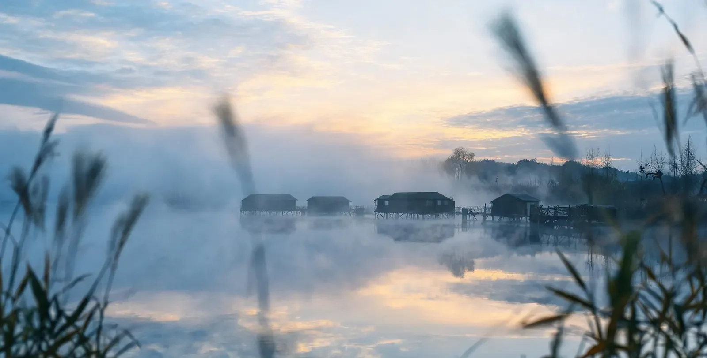
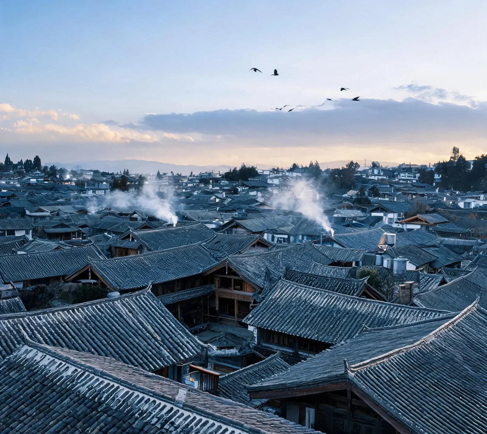
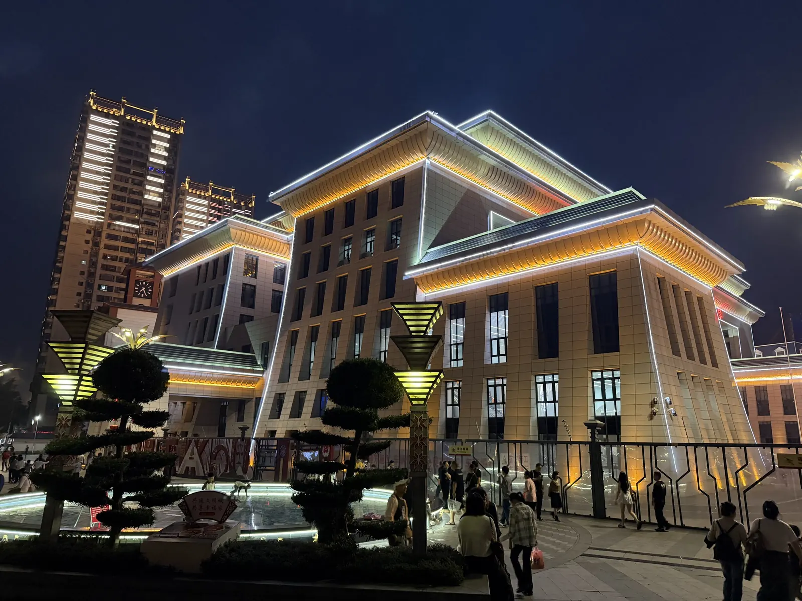
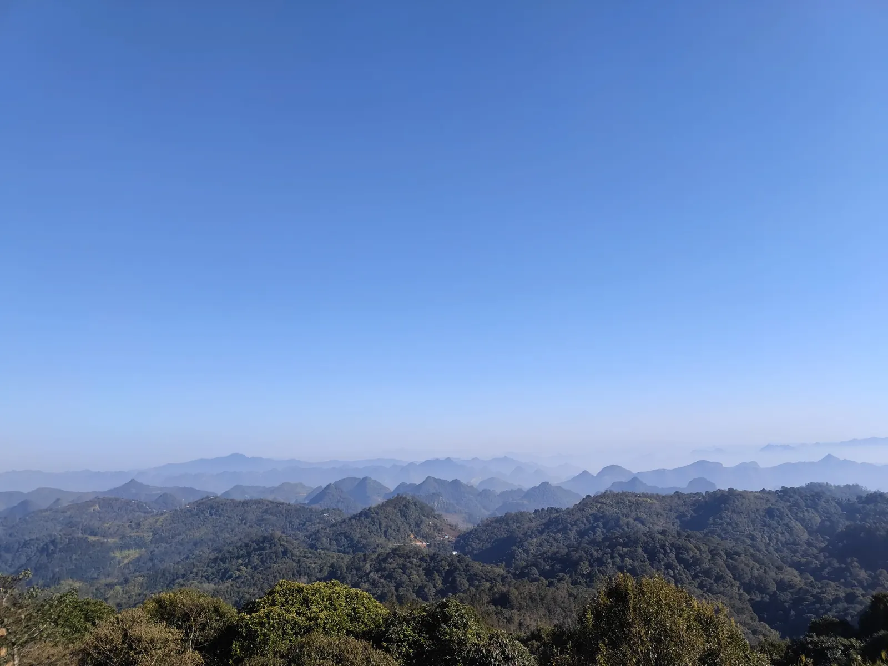

Jin Kang
An archive of light, kept frame by frame since 2019.
A quiet corner of the internet — where golden hour spills over window sills, laughter pauses before it breaks, and empty streets hold their breath for one more click of the shutter.
12frames
04letters
8,578days
01 Index
Twelve frames, in the order they found me.
- 01Slow FieldsYuanyang06:31
- 02Silent LakeLugu05:47
- 03Dali Old TownDali15:40
- 04Old MountainsAnning16:12
- 05Border FiresHekou21:08
- 06All GoldAnning17:22
- 07City Under CloudsKunming14:05
- 08Sky and WallJianshui11:38
- 09Bloom in ShadowMengzi18:04
- 10Lugu WaterLugu07:15
- 11Rice TerracesHani08:02
- 12Yunnan SkyYunnan17:58
02 Frames
Curated loosely, arranged randomly. Most were stolen from real days that will never return.




“Some places you photograph because they're beautiful. Some you photograph because you're afraid of forgetting.”
03 Letters
Four letters, never sent. Swipe, or use the arrow keys.
Letter 01
The letter I wrote myself at twenty finally arrived at thirty
“Dear future me — I hope you have figured out how to be brave by now. I hope you have seen the sea. I hope you still cry at the right movies and that you never became the kind of person who walks past a busker without putting something in the case.”
I didn't keep every promise. But I am standing at the sea. And sometimes that's enough for one life.
康Jin Kang
Letter 02
The old shop that sold nothing I could name
There's a shop in Jianshui that doesn't seem to sell anything. A counter, a scale, two glass jars of candy, and an old woman who is always peeling garlic.
Last winter I passed by again, alone. She didn't recognize me, or maybe she did and didn't say. I bought two bags of those candies. They tasted exactly the same.
康Jin Kang
Letter 03
The train station that smelled like an unwritten letter
Mengzi station is small enough that you can hear the announcement from the ticket office. It has a way of making you feel like you're leaving something, even when you're only passing through.
Last year I stood there again, waiting for a different train, and I swear I could still smell the zongzi and the damp concrete and that particular, hopeless smell of an unwritten letter.
康Jin Kang
Letter 04
A night in Anning when nobody was in a hurry
In the weeks before we had to leave, I'd go up to the fifth-floor landing with a cup of lukewarm soybean milk and sit on the windowsill watching the old magnolia across the road.
One night in March a group of kids brought up a portable speaker and played Cantopop from ten years ago. A boy I'd never spoken to sat next to me and we didn't talk for an hour, just listened.
康Jin Kang
04 About
“Collecting light, one frame at a time.”
Most days I'm invisible on purpose — the guy with the camera standing just outside the circle, watching everyone else's lives unfold with a quiet kind of respect.
I don't believe in perfect photos. I believe in honest ones — the ones that look back at you and say: yes, this happened, exactly like this, and it will never happen again.
— Jin Kang
- Based
- Yunnan, CN
- Shooting
- 2019 — now
- Kit
- 35mm / phone